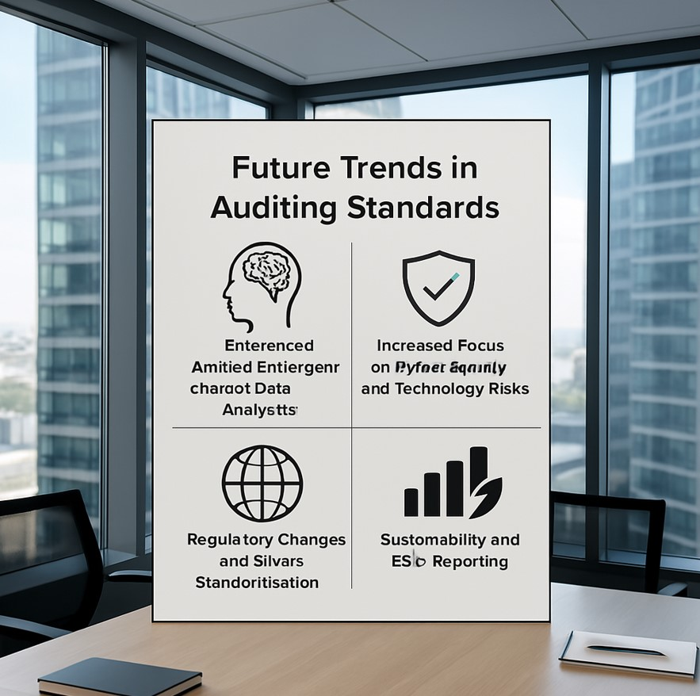

Future Trends in Auditing Standards: Shaping the Audit Landscape
The auditing profession has always been crucial in ensuring the integrity of financial reporting. But with technological advancements, regulatory changes, and a growing demand for more transparency and accuracy, auditing standards are continuously adapting. So, what’s next for auditing standards? Let’s explore the emerging trends that will redefine the audit process in the coming years.
With the rise of digital platforms and cybersecurity threats, future auditing standards will place greater emphasis on auditing IT systems and ensuring data protection. Auditors will play a key role in assessing and mitigating risks associated with cyber vulnerabilities, ensuring businesses are prepared for the digital age.
1. Embrace of Artificial Intelligence (AI) and Data Analytics
The rise of AI and data analytics is already making waves in the audit industry. These technologies allow auditors to process massive amounts of data more efficiently and accurately than ever before. By incorporating AI tools, auditors can not only detect discrepancies or patterns more effectively but also anticipate risks before they escalate.
How it’s changing the game:
- Enhanced Risk Assessment: AI can analyze historical data to detect anomalies, ensuring better risk management.
- Real-Time Audits: Continuous auditing using real-time data allows auditors to assess financials on an ongoing basis, rather than waiting for a year-end review.
- Automation of Routine Tasks: Manual tasks, such as data entry and validation, can be automated, allowing auditors to focus on more complex areas of the audit.
The future trend: Expect audit standards to evolve to incorporate the use of AI in assessing data and performing risk assessments, ensuring that auditors can keep up with the vast amounts of data businesses handle today.
2. Increased Focus on Cybersecurity and Technology Risks
As businesses rely more on digital platforms and handle vast amounts of sensitive data, cybersecurity risks have become a key area of concern for auditors. Standards will need to evolve to assess and ensure that companies are protected from potential threats, making the audit of IT infrastructure and cybersecurity protocols essential.
How it’s changing the game:
- Cybersecurity Audits: Auditors will play a more integral role in assessing a company’s cybersecurity framework.
- Data Protection: Auditors will need to evaluate how companies protect data, ensuring compliance with privacy regulations such as GDPR.
- Third-Party Risk Management: As businesses collaborate with more third-party vendors, auditing standards will increasingly include protocols for assessing third-party risk exposure.
The future trend: Auditing standards will evolve to integrate cybersecurity checks as a standard part of the audit process, helping businesses proactively protect against security breaches.
3. Regulatory Changes and Global Standardization
As the business world becomes more interconnected, there is a growing push toward global standardization of auditing practices. Bodies like the International Auditing and Assurance Standards Board (IAASB) are working towards harmonizing auditing standards across borders, making it easier for multinational corporations to comply with auditing regulations worldwide.
How it’s changing the game:
- Cross-Border Audits: Businesses that operate in multiple countries will benefit from consistent auditing standards.
- Compliance Ease: Global businesses will find it easier to navigate compliance, reducing the complexities of managing different regulations in each country.
- Increased Trust in Global Financial Markets: Standardized auditing practices can enhance trust in global financial markets, attracting more international investors.
The future trend: Expect to see a more unified global framework for auditing standards, which will simplify processes for international corporations and investors.
4. Sustainability and ESG (Environmental, Social, and Governance) Reporting
Sustainability is becoming a key focus in the corporate world, and so is the auditing of ESG disclosures. Companies are under increasing pressure to report their environmental impact, social responsibility efforts, and governance practices. Auditors will need to develop new standards to assess the accuracy and reliability of these non-financial disclosures.
How it’s changing the game:
- Focus on Non-Financial Audits: Auditors will be required to assess ESG-related risks and verify that the company’s sustainability efforts align with their stated goals.
- Assurance on ESG Reporting: With increased demand for transparency, auditors will provide assurance on ESG disclosures, ensuring that they are truthful and not misleading.
- Sustainability Metrics: Auditing standards will increasingly include guidelines for auditing environmental, social, and governance data.
The future trend: As sustainability becomes a priority for businesses and investors alike, expect auditing standards to include comprehensive frameworks for evaluating ESG disclosures, ensuring businesses are held accountable for their sustainability practices.
5. The Rise of Blockchain and Digital Ledger Technology
Blockchain technology has the potential to disrupt how audits are conducted. Its decentralized, transparent, and immutable nature offers the opportunity for real-time, secure, and verifiable transactions, which can transform traditional auditing practices.
How it’s changing the game:
- Enhanced Transparency: Blockchain allows auditors to directly access verified financial transactions without relying on third-party confirmations.
- Real-Time Audits: Blockchain can help auditors monitor transactions as they occur, providing up-to-date insights.
- Automated Smart Contracts: Auditors can verify smart contracts embedded in blockchain systems, streamlining the audit process.
The future trend: Auditing standards will likely adapt to incorporate blockchain into audits, allowing for faster, more accurate verification of financial transactions and documents.
6. A Shift Towards More Transparent and Comprehensive Reporting
In today’s business environment, investors, regulators, and the public demand more transparent and comprehensive financial reporting. Auditing standards will likely evolve to ensure that companies provide a clearer picture of their financial health and operational performance, including non-financial information such as risk factors, business strategy, and market conditions.
How it’s changing the game:
- More Detailed Financial Reports: Companies will be required to disclose more granular financial information, ensuring greater transparency for investors and stakeholders.
- Audit of Forward-Looking Information: Auditors will be expected to verify forward-looking statements and forecasts, helping businesses make more informed decisions.
The future trend: The push for greater transparency will likely lead to new standards that emphasize comprehensive, forward-looking reporting, reducing the information gap for investors and stakeholders.
Conclusion: Adapting to the Future of Auditing
The future of auditing standards is driven by technology, evolving regulations, and a growing emphasis on sustainability and transparency. As AI, blockchain, cybersecurity, and global regulatory changes continue to reshape the business landscape, auditing standards will evolve to meet these challenges. The auditors of tomorrow will be more tech-savvy, more focused on ESG reporting, and equipped to deal with the complexities of a globalized economy.
Stay ahead of the curve and prepare for the changes that are coming your way. It’s an exciting time for the auditing profession, and embracing these future trends will ensure a more robust and reliable financial reporting system for businesses and investors alike.